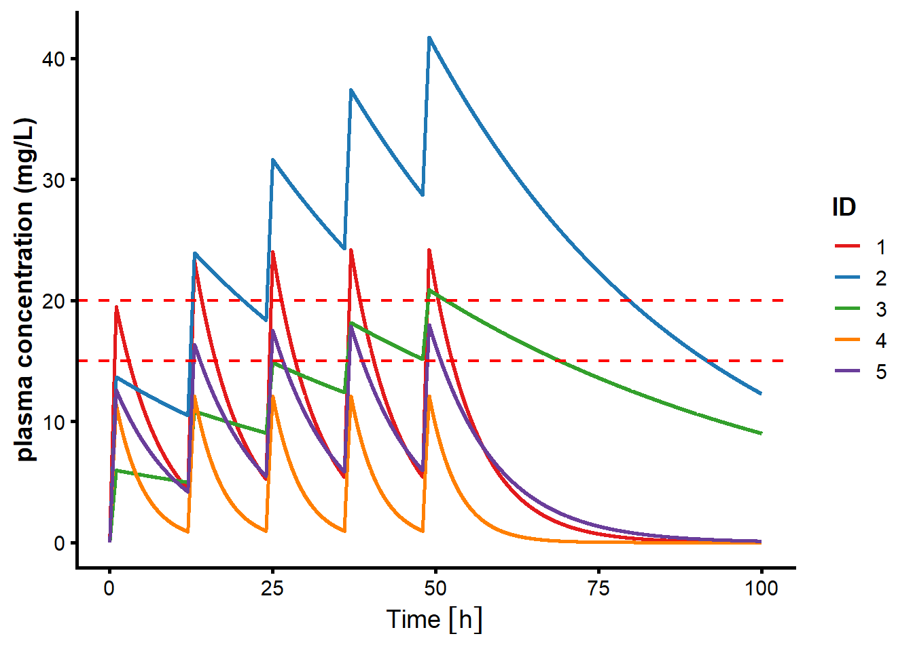
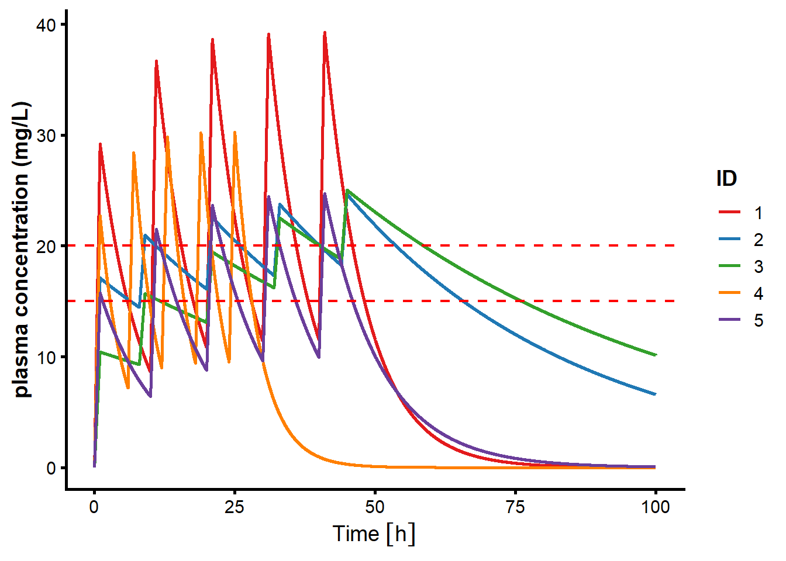

################################################################################
# Vancomycin Pharmacokinetic Simulation
################################################################################
# library
library(rxode2)rxode2 5.0.1 using 2 threads (see ?getRxThreads)
no cache: create with `rxCreateCache()`library(ggplot2)
library(pracma)
Attaching package: 'pracma'The following objects are masked from 'package:rxode2':
erf, logitlibrary(dplyr)
Attaching package: 'dplyr'The following objects are masked from 'package:stats':
filter, lagThe following objects are masked from 'package:base':
intersect, setdiff, setequal, unionlibrary(units)udunits database from C:/Users/Dion Notario/AppData/Local/R/win-library/4.5/units/share/udunits/udunits2.xml#setseed
set.seed(1234)
# Compartment model
## reference : https://doi.org/10.3389/fphar.2024.1364681
iv.1cmt <- function() {
ini({
## pkpop parameters (fixed effect)
tCL <- 0.2776317 # log tCL
tVd <- 4.317488 #log tVd
## covariate
beta_CL_LBM <- 0.011 # log β_CL_LBM (effect lean body mass on CL)
beta_CL_eGFR <- 0.61 # log β_CL_eGFR (effect eGFR on CL)
## between subject variability
eta.CL ~ 0.28
eta.Vd ~ 0.31
## residual error
add.err <- 2.9
})
model({
#define individual parameters
CL <- exp(tCL + beta_CL_LBM*LBM + beta_CL_eGFR*eGFR + eta.CL)
Vd <- exp(tVd + eta.Vd)
# one compartment model
d/dt(center) = - CL/Vd * center
Cp = center / Vd
Cp ~ add(add.err)
})
}
# simulation data of LBM and eGFR
id <- c(1:5)
LBM <- runif(n=5, min = 41, max=104)
eGFR <- runif(n = 5 , min=0.17, max=2.47)
MIC <- runif(n=5, min=0.5, max=1.5)
idv.cov <- data.frame(cbind(id, LBM, eGFR))
head(idv.cov) id LBM eGFR
1 1 48.16331 1.6427144
2 2 80.20486 0.1918402
3 3 79.38431 0.7048662
4 4 80.27290 1.7019926
5 5 95.23767 1.3527776# dose regiment : multiple intravenous infussion
## dose 1000 mg, duration 1 hour, interval 12 hours
ev <- et(amountUnits="mg", timeUnits="hours") %>%
et(time=0, amt=1000, cmt="center", ii=12, addl=4, dur = 1) %>%
et(0,100, length.out=10000)%>%
et(id=1:5)
# pharmacokinetic simulation
rxSetSeed(5678)
sim <- rxSolve(iv.1cmt, ev, iCov = idv.cov)ℹ parameter labels from comments are typically ignored in non-interactive modeℹ Need to run with the source intact to parse comments# Set warna yang konsisten
colors <- c("1" = "#E31A1C",
"2" = "#1F78B4",
"3" = "#33A02C",
"4" = "#FF7F00",
"5" = "#6A3D9A")
sim_plot <- sim %>%
mutate(id = factor(id, levels = 1:5))
ggplot(sim_plot, aes(x = time, y = Cp, color = id, group = id)) +
geom_line(linewidth = 1) +
scale_color_manual(values = colors, name = "ID") +
geom_hline(yintercept = c(15, 20), linetype = "dashed",
linewidth = 0.8, color = "red") +
labs(x = "Time", y = "plasma concentration (mg/L)") +
theme_classic(base_size = 14) +
theme(
axis.line = element_line(linewidth = 1),
axis.ticks = element_line(linewidth = 1),
axis.text = element_text(color = "black"),
axis.title = element_text(face = "bold"),
plot.title = element_text(hjust = 0.5),
legend.position = "right",
legend.title = element_text(face = "bold")
)
# AUC24perMIC
AUC24perMIC <- sim %>%
mutate(time = drop_units(time)) %>%
filter(time <= 24) %>% # AUC 0-24 hours
arrange(id, time) %>% # arrange time and id
group_by(id) %>%
summarise(
AUC24 = trapz(time, Cp), # trapezoidal AUC
.groups = "drop"
)%>%
mutate(AUC24perMIC = AUC24/MIC)%>%
data.frame()
AUC24perMIC id AUC24 AUC24perMIC
1 1 268.1512 224.65916
2 2 387.6348 370.95129
3 3 179.9840 229.94282
4 4 106.1244 74.55521
5 5 210.0583 265.11940# Personalized dosage regimen
ev <- et(amountUnits="mg", timeUnits="hours") %>%
et(time=0, amt=1500, cmt="center", ii=10, addl=4, dur=1, id=1) %>%
et(time=0, amt=1250, cmt="center", dur=1, id=2) %>%
et(time=8, amt = 500, cmt="center", dur=1, addl = 3, ii=12, id=2)%>%
et(time=0, amt=1750, cmt="center", dur=1, id=3) %>%
et(time=8, cmt="center", amt=1100, dur=1, ii = 12, addl = 3, id=3)%>%
et(time=0, amt=2000, cmt="center", ii=6, addl=4, dur=1, id=4) %>%
et(time=0, amt=1250, cmt="center", ii=10, addl=4, dur=1, id=5) %>%
et(0, 100, length.out=10000)
# pharmacokinetic simulation
rxSetSeed(5678)
sim <- rxSolve(iv.1cmt, ev, iCov = idv.cov)ℹ parameter labels from comments are typically ignored in non-interactive mode
ℹ Need to run with the source intact to parse comments# Set warna yang konsisten
colors <- c("1" = "#E31A1C",
"2" = "#1F78B4",
"3" = "#33A02C",
"4" = "#FF7F00",
"5" = "#6A3D9A")
sim_plot <- sim %>%
mutate(id = factor(id, levels = 1:5))
ggplot(sim_plot, aes(x = time, y = Cp, color = id, group = id)) +
geom_line(linewidth = 1) +
scale_color_manual(values = colors, name = "ID") +
geom_hline(yintercept = c(15, 20), linetype = "dashed",
linewidth = 0.8, color = "red") +
labs(x = "Time", y = "plasma concentration (mg/L)") +
theme_classic(base_size = 14) +
theme(
axis.line = element_line(linewidth = 1),
axis.ticks = element_line(linewidth = 1),
axis.text = element_text(color = "black"),
axis.title = element_text(face = "bold"),
plot.title = element_text(hjust = 0.5),
legend.position = "right",
legend.title = element_text(face = "bold")
)
# AUC24perMIC_2
AUC24perMIC_2 <- sim %>%
mutate(time = drop_units(time)) %>%
filter(time <= 24) %>% # AUC 0-24 hours
arrange(id, time) %>% # arrange time and id
group_by(id) %>%
summarise(
AUC24 = trapz(time, Cp), # trapezoidal AUC
.groups = "drop"
)%>%
mutate(AUC24perMIC = AUC24/MIC)%>%
data.frame()
AUC24perMIC_2 id AUC24 AUC24perMIC
1 1 500.4664 419.2946
2 2 423.4918 405.2651
3 3 317.6845 405.8654
4 4 399.6864 280.7903
5 5 320.7567 404.8343